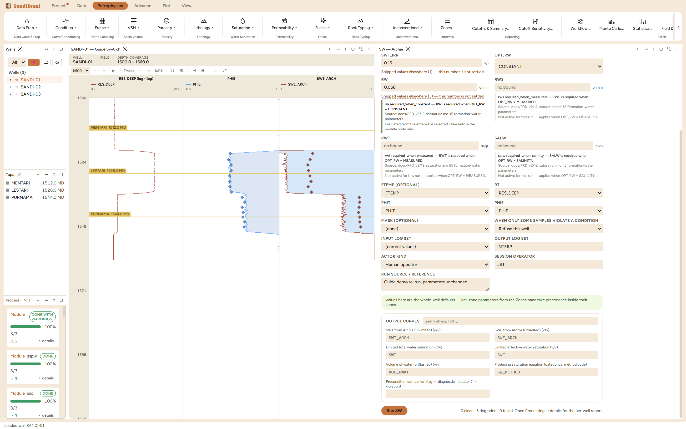

Archie's equation, the clean-sand baseline every other saturation method in this book is measured against (Archie 1942). It assumes the rock's only conductor is the brine in its pores; wherever that holds, nothing beats it, and wherever it fails, the failure direction is known: clay adds conductivity the model attributes to water, so Archie reads shaly pay too wet. Run it first on every study, not because it will be the final answer in shaly rock, but because the shaly-sand methods are corrections to it and their size is only meaningful against this baseline.
One equation, two identities, and the application deliberately names them separately because they are not interchangeable:
archie_total: SWT = (A·Rw / (PHIT^M · RT))^(1/N)
SWE backed out via Swb = 1 − PHIE/PHIT
archie_effective: SWE = (A·Rw / (PHIE^M · RT))^(1/N)
SWT lifted through the inverse
Both are Archie; they differ in which porosity carries the exponent, and in shaly rock that difference is enormous, as measured below. The porosity system is part of the equation's identity and must be declared, never inferred, and the Rw entered must have been derived in the same system.
0 clean · 3 degraded, and as everywhere in this application, degraded means clamped-and-counted: 183 samples on the reported well computed below the 0.16 irreducible floor and were limited (gas sand computing below irreducible is the pick doing its job). Medians on the total-porosity identity: SWT 0.3811, with the backed-out SWE at 0.0626.
Now the check that grades the run: rock known to be water-bearing must read Sw = 1. In the wet sand this run reads 0.4549:
SELECT round(median(c.value), 4) FROM computed_curves c JOIN standard_curves sc ON c.well_id = sc.well_id AND c.depth = sc.depth WHERE c.curve_name = 'SWT_ARCH' AND sc.gr < 60 AND sc.res_deep < 10 AND NOT isnan(c.value)
Half the water is missing, and the cause is the pairing: the Rw was derived through PHIE², then run on the total identity where PHIT² divides it. Switching the identity to archie_effective on the same picks, the wet sand reads 0.8636 on the direct SWE (0.9287 on the lifted SWT), and the whole-section medians jump to SWT 0.8412 / SWE 0.7395, against 0.3811 / 0.0626 on the total form. Same equation, same picks, tens of saturation units apart: the identity is a declaration with consequences, and the wet sand is the instrument that catches a mismatched Rw before a client does. The gas sand, meanwhile, reads 0.09 under either identity, because at low porosity and high RT both forms starve together. Restored to the total form, every number returns exactly.
